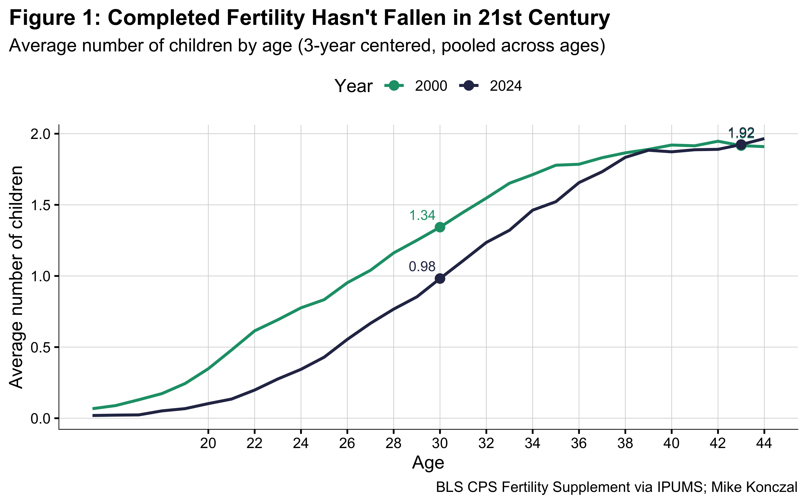
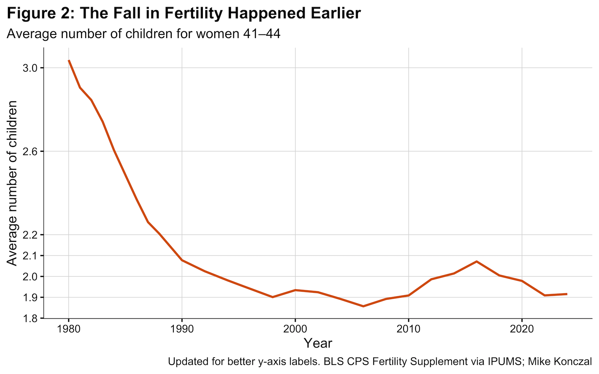
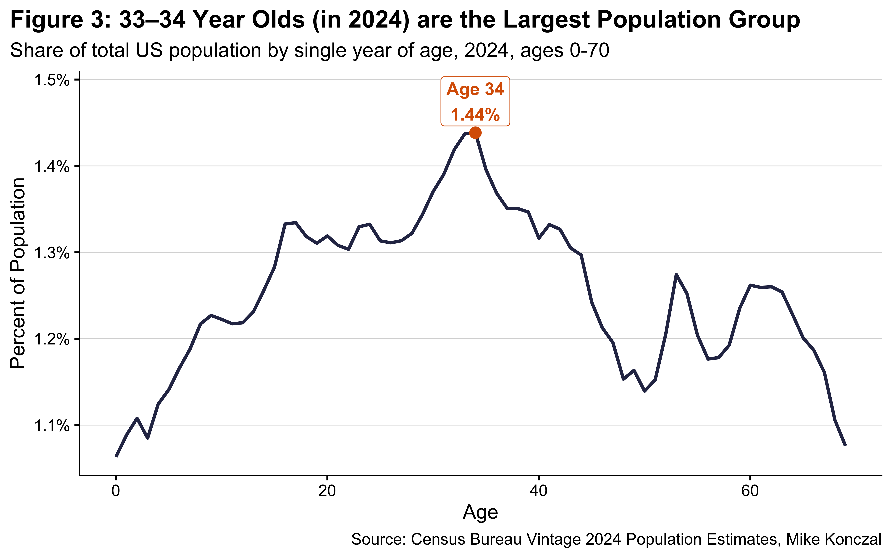
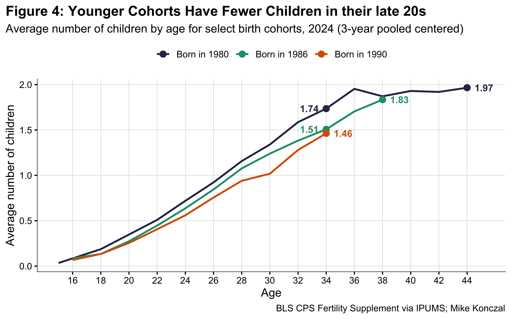
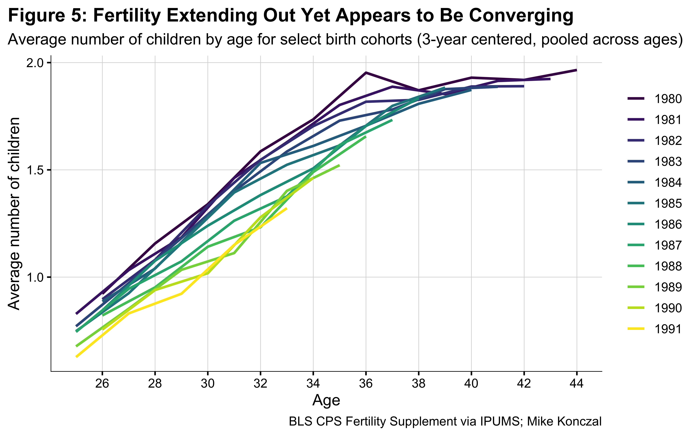
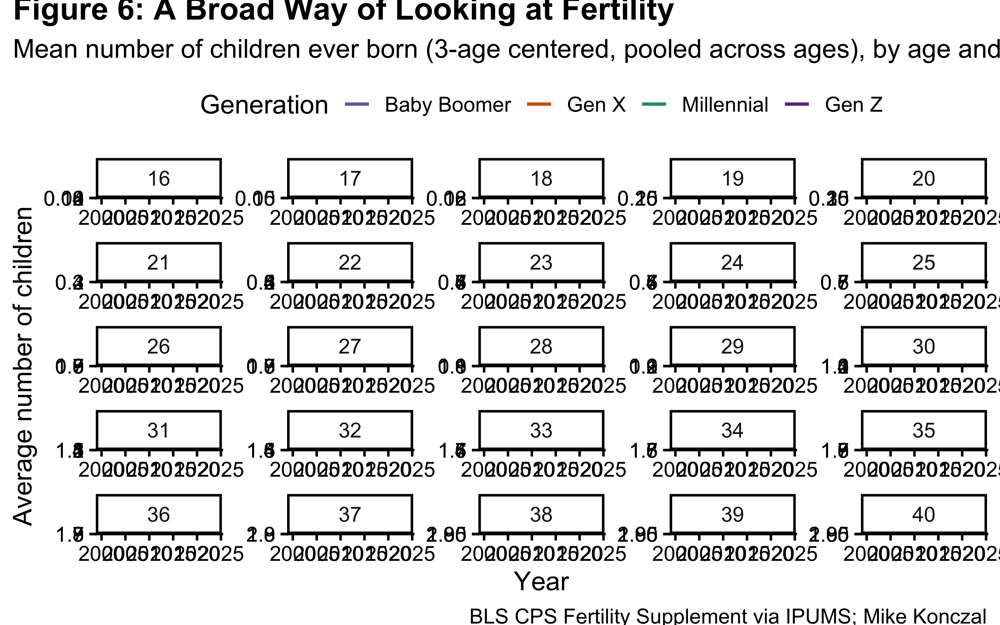

Show code
library(tidyverse)
library(ipumsr)
library(tidyusmacro)
library(zoo)
library(janitor)
library(scales)
library(ggrepel)
ddi <- read_ipums_ddi("../../data_folder/cps_00027.xml")
data <- read_ipums_micro(ddi)library(tidyverse)
library(ipumsr)
library(tidyusmacro)
library(zoo)
library(janitor)
library(scales)
library(ggrepel)
ddi <- read_ipums_ddi("../../data_folder/cps_00027.xml")
data <- read_ipums_micro(ddi)You need six variables (FREVER, FRSUPPWT, AGE, YEAR, SEX, and NATIVITY) from IPUMS CPS across all the years to generate every figure in this analysis with correct population weighting and subgroup structure.
Let’s check our analysis versus Census webpage. Table 6 here has completed fertility for all women 40-44 as 1.918 and 45-50 as 2.001. It also has native born as 1.873 and 1.956 respectively.
check_all <- data %>%
filter(FREVER != 999, AGE < 51, AGE >= 40, YEAR == 2024) %>%
mutate(second_half_40s = AGE >= 45) %>%
group_by(second_half_40s) %>%
summarize(avg_no_children = weighted.mean(FREVER, FRSUPPWT, na.rm = TRUE), .groups = "drop")
check_all_native <- data %>%
filter(FREVER != 999, AGE < 51, AGE >= 40, YEAR == 2024, NATIVITY <= 3, NATIVITY != 0) %>%
mutate(second_half_40s = AGE >= 45) %>%
group_by(second_half_40s) %>%
summarize(avg_no_children = weighted.mean(FREVER, FRSUPPWT, na.rm = TRUE), .groups = "drop")
print(as.data.frame(check_all)) second_half_40s avg_no_children
1 FALSE 1.918425
2 TRUE 2.001291print(as.data.frame(check_all_native)) second_half_40s avg_no_children
1 FALSE 1.879114
2 TRUE 1.953645Even on total and close on nativity (~0.0045 children); sometimes the Census display use slightly different weighting. I’m comfortable proceeding with this way of calculating completed fertility.
age_year_3yr <- data %>%
filter(FREVER != 999, AGE < 45) %>%
# First get sums by YEAR–AGE
group_by(YEAR, AGE) %>%
summarize(
sum_children = sum(FREVER * FRSUPPWT, na.rm = TRUE),
sum_weight = sum(FRSUPPWT, na.rm = TRUE),
.groups = "drop"
) %>%
# Now do a 3-age *weighted* pooling within each YEAR
group_by(YEAR) %>%
arrange(AGE, .by_group = TRUE) %>%
mutate(
sum_children_3 = rollapply(
sum_children,
width = 3,
FUN = sum,
align = "center",
partial = TRUE
),
sum_weight_3 = rollapply(
sum_weight,
width = 3,
FUN = sum,
align = "center",
partial = TRUE
),
avg_3yr = sum_children_3 / sum_weight_3
) %>%
ungroup()
age_year_3yr %>%
filter(YEAR %in% c(2000, 2024)) %>%
mutate(YEAR = as.factor(YEAR)) %>%
ggplot(aes(AGE, avg_3yr, color = YEAR, group = YEAR)) +
geom_line(size = 1) +
geom_point(data = ~ dplyr::filter(.x, AGE %in% c(30, 43)), size = 2.75) +
geom_text(
data = ~ dplyr::filter(.x, AGE %in% c(30, 43)),
aes(
label = sprintf("%.2f", avg_3yr),
hjust = ifelse(AGE == 30, 1.15, 0.5)
),
vjust = -0.6,
size = 3.5,
position = position_nudge(y = 0.01),
show.legend = FALSE
) +
scale_color_manual(values = c("2000" = "#1b9e77", "2024" = "#2c3254")) +
labs(
title = "Figure 1: Completed Fertility Hasn't Fallen in 21st Century",
subtitle = "Average number of children by age (3-year centered, pooled across ages)",
x = "Age",
y = "Average number of children",
color = "Year",
caption = "BLS CPS Fertility Supplement via IPUMS; Mike Konczal"
) +
coord_cartesian(clip = "off") +
scale_x_continuous(breaks = seq(20, 44, 2)) +
theme_classic(base_size = 13) +
theme(
axis.line = element_line(linewidth = 0.25),
panel.grid.major.y = element_line(color = "gray85", linewidth = 0.25),
panel.grid.major.x = element_line(color = "gray85", linewidth = 0.25),
panel.grid.minor.y = element_blank(),
panel.grid.minor.x = element_blank(),
plot.title = element_text(face = "bold"),
legend.position = "top",
plot.title.position = "plot"
)
total_by_year <- data %>%
filter(FREVER != 999, AGE >= 41, AGE < 45, YEAR >= 1980) %>%
group_by(YEAR) %>%
summarize(avg_no_children = weighted.mean(FREVER, FRSUPPWT, na.rm = TRUE), .groups = "drop") %>%
ungroup()
print(total_by_year, n = 30)# A tibble: 26 × 2
YEAR avg_no_children
<dbl> <dbl>
1 1980 3.04
2 1981 2.90
3 1982 2.85
4 1983 2.74
5 1984 2.60
6 1986 2.37
7 1987 2.26
8 1988 2.20
9 1990 2.08
10 1992 2.03
11 1994 1.98
12 1995 1.96
13 1998 1.90
14 2000 1.93
15 2002 1.92
16 2004 1.89
17 2006 1.86
18 2008 1.89
19 2010 1.91
20 2012 1.99
21 2014 2.01
22 2016 2.07
23 2018 2.00
24 2020 1.98
25 2022 1.91
26 2024 1.92 total_by_year %>%
ggplot(aes(YEAR, avg_no_children)) +
geom_line(size = 1, color="#d95f02") +
labs(
title = "Figure 2: The Fall in Fertility Happened Earlier",
subtitle = "Average number of children for women 41-44",
x = "Age",
y = "Average number of children",
color = "Year",
caption = "BLS CPS Fertility Supplement via IPUMS; Mike Konczal"
) +
theme_classic(base_size = 13) +
theme(
axis.line = element_line(linewidth = 0.25), # keep both axes
panel.grid.major.y = element_line(color = "gray85", linewidth = 0.25),
panel.grid.major.x = element_line(color = "gray85", linewidth = 0.25),
panel.grid.minor.y = element_blank(),
panel.grid.minor.x = element_blank(),
plot.title = element_text(face = "bold"),
legend.position = "top",
plot.title.position = "plot"
)
Is this all immigration? No.
fertility_nativity <- data %>%
filter(FREVER != 999, AGE >= 41, AGE < 45, YEAR %in% c(2000, 2024)) %>%
filter(NATIVITY != 0) %>%
mutate(native = NATIVITY <= 3) %>%
group_by(native, YEAR) %>%
summarize(avg_no_children = weighted.mean(FREVER, FRSUPPWT), .groups = "drop") %>%
pivot_wider(names_from = YEAR, values_from = avg_no_children) %>%
ungroup()
print(fertility_nativity)# A tibble: 2 × 3
native `2000` `2024`
<lgl> <dbl> <dbl>
1 FALSE 2.20 2.01
2 TRUE 1.88 1.87The age distribution.
ages <- read_csv("nc-est2024-agesex-res.csv") %>%
clean_names() %>%
filter(sex == 0)
total_pop <- ages %>%
filter(age == 999) %>%
pull(popestimate2024)
ages_plot <- ages %>%
mutate(percent_pop = popestimate2024 / total_pop) %>%
filter(age < 70)
# find the max age
max_point <- ages_plot %>%
filter(percent_pop == max(percent_pop))
ggplot(ages_plot, aes(x = age, y = percent_pop)) +
# Match line style: slightly thicker, dark blue color used in other plots
geom_line(linewidth = 1, color = "#2c3254") +
# Match point style: orange highlight color
geom_point(data = max_point, color = "#d95f02", size = 3) +
geom_label_repel(
data = max_point,
aes(label = paste0("Age ", age, "\n", percent(percent_pop, accuracy = 0.01))),
nudge_y = 0.0005, # Adjusted nudge for clarity
size = 4,
color = "#d95f02", # Match text to point color
fontface = "bold"
) +
scale_y_continuous(labels = percent_format(accuracy = 0.1)) +
labs(
title = "Figure 3: 33–34 Year Olds (in 2024) are the Largest Population Group",
subtitle = "Share of total US population by single year of age, 2024, ages 0-70",
x = "Age",
y = "Percent of Population",
caption = "Source: Census Bureau Vintage 2024 Population Estimates, Mike Konczal"
) +
# Apply the consistent theme settings
theme_classic(base_size = 13) +
theme(
axis.line = element_line(linewidth = 0.25),
panel.grid.major.y = element_line(color = "gray85", linewidth = 0.25),
panel.grid.minor.y = element_blank(),
panel.grid.major.x = element_blank(),
plot.title = element_text(face = "bold"),
plot.title.position = "plot"
)
Let’s try this.
# Prepare data
# Prepare data with 3-age *weighted* pooling
age_data <- data %>%
filter(FREVER != 999, AGE < 45) %>%
group_by(YEAR, AGE) %>%
summarize(
sum_children = sum(FREVER * FRSUPPWT, na.rm = TRUE),
sum_weight = sum(FRSUPPWT, na.rm = TRUE),
.groups = "drop"
) %>%
group_by(YEAR) %>%
arrange(AGE, .by_group = TRUE) %>%
mutate(
sum_children_3 = rollapply(
sum_children,
width = 3,
FUN = sum,
align = "center",
partial = TRUE
),
sum_weight_3 = rollapply(
sum_weight,
width = 3,
FUN = sum,
align = "center",
partial = TRUE
),
avg_3yr = sum_children_3 / sum_weight_3
) %>%
ungroup()
# Filter for specific cohorts
age_data_graphic <- age_data %>%
mutate(birth_year = YEAR - AGE) %>%
filter(birth_year %in% c(1990, 1986, 1980)) %>%
mutate(cohort_label = factor(
paste("Born in", birth_year),
levels = c("Born in 1980", "Born in 1986", "Born in 1990")
))
# Create label subset with offset logic
labels_df <- age_data_graphic %>%
group_by(birth_year) %>%
mutate(is_endpoint = AGE == max(AGE)) %>%
filter(AGE == 34 | is_endpoint) %>%
distinct(AGE, .keep_all = TRUE) %>%
ungroup() %>%
mutate(
label_val = sprintf("%.2f", avg_3yr),
x_offset = ifelse(is_endpoint, 1.2, -1.2)
)
# Plot
age_data_graphic %>%
ggplot(aes(AGE, avg_3yr, color = cohort_label, group = cohort_label)) +
geom_line(linewidth = 1) +
geom_point(data = labels_df, size = 3) +
geom_text(
data = labels_df,
aes(x = AGE + x_offset, label = label_val),
fontface = "bold",
size = 3.8,
show.legend = FALSE
) +
scale_color_manual(values = c(
"Born in 1980" = "#2c3254",
"Born in 1986" = "#1b9e77",
"Born in 1990" = "#d95f02"
)) +
labs(
title = "Figure 4: Younger Cohorts Have Fewer Children in their late 20s",
subtitle = "Average number of children by age for select birth cohorts, 2024 (3-year pooled centered)",
x = "Age",
y = "Average number of children",
color = NULL,
caption = "BLS CPS Fertility Supplement via IPUMS; Mike Konczal"
) +
scale_x_continuous(breaks = seq(16, 44, 2)) +
theme_classic(base_size = 13) +
theme(
axis.line = element_line(linewidth = 0.25),
panel.grid.major.y = element_line(color = "gray85", linewidth = 0.25),
panel.grid.major.x = element_line(color = "gray85", linewidth = 0.25),
panel.grid.minor.y = element_blank(),
panel.grid.minor.x = element_blank(),
plot.title = element_text(face = "bold"),
legend.position = "top",
plot.title.position = "plot"
)
Let’s try to find the potential second line.
# Prepare data
age_data <- data %>%
filter(FREVER != 999, AGE < 45) %>%
group_by(YEAR, AGE) %>%
summarize(
sum_children = sum(FREVER * FRSUPPWT, na.rm = TRUE),
sum_weight = sum(FRSUPPWT, na.rm = TRUE),
.groups = "drop"
) %>%
group_by(YEAR) %>%
arrange(AGE, .by_group = TRUE) %>%
mutate(
sum_children_3 = rollapply(
sum_children,
width = 3,
FUN = sum,
align = "center",
partial = TRUE
),
sum_weight_3 = rollapply(
sum_weight,
width = 3,
FUN = sum,
align = "center",
partial = TRUE
),
avg_3yr = sum_children_3 / sum_weight_3
) %>%
ungroup()
# Filter for specific cohorts
age_data_graphic <- age_data %>%
mutate(birth_year = YEAR - AGE) %>%
filter(birth_year %in% c(1980:1991)) %>%
mutate(
birth_year = as.factor(birth_year)
) %>%
filter(AGE > 24)
# Plot
age_data_graphic %>%
ggplot(aes(AGE, avg_3yr, color = birth_year)) +
geom_line(linewidth = 1) +
labs(
title = "Figure 5: Fertility Extending Out Yet Appears to Be Converging",
subtitle = "Average number of children by age for select birth cohorts (3-year centered, pooled across ages)",
x = "Age",
y = "Average number of children",
color = NULL,
caption = "BLS CPS Fertility Supplement via IPUMS; Mike Konczal"
) +
scale_x_continuous(breaks = seq(16, 44, 2)) +
theme_classic(base_size = 13) +
theme(
axis.line = element_line(linewidth = 0.25),
panel.grid.major.y = element_line(color = "gray85", linewidth = 0.25),
panel.grid.major.x = element_line(color = "gray85", linewidth = 0.25),
panel.grid.minor.y = element_blank(),
panel.grid.minor.x = element_blank(),
plot.title = element_text(face = "bold"),
legend.position = "right",
plot.title.position = "plot"
) +
scale_color_viridis_d(option = "D")
Some math so it’s not just eye-balling the shift.
# Assumes age_data_graphic from "graphic_mid_full" chunk:
# - birth_year (factor, 1981–1991)
# - AGE
# - avg_3yr
# 1. For each cohort (1981–1991), get the max observed age and avg kids at that age
end_by_cohort <- age_data_graphic %>%
filter(birth_year %in% as.factor(1981:1991)) %>%
group_by(birth_year) %>%
slice_max(order_by = AGE, n = 1, with_ties = FALSE) %>%
ungroup() %>%
rename(
max_age = AGE,
max_kids = avg_3yr
)
# 2. Get the 1981 cohort age–kids curve
curve_1981 <- age_data_graphic %>%
filter(birth_year == "1981") %>%
select(AGE, avg_3yr) %>%
rename(
age_1981 = AGE,
kids_1981 = avg_3yr
)
# 3. Match each cohort’s max-age kids level to the closest point on the 1981 curve
cohort_shift <- end_by_cohort %>%
rowwise() %>%
mutate(
idx_match = which.min(abs(curve_1981$kids_1981 - max_kids)),
age_in_1981 = curve_1981$age_1981[idx_match],
kids_in_1981 = curve_1981$kids_1981[idx_match],
age_shift_years = max_age - age_in_1981
) %>%
ungroup() %>%
mutate(
birth_year = as.integer(as.character(birth_year))
) %>%
arrange(birth_year) %>%
select(
birth_year,
max_age,
age_in_1981,
age_shift_years,
max_kids,
kids_in_1981
)
mean(cohort_shift$age_shift_years)[1] 2.636364fe_data <- age_data_graphic %>%
filter(
birth_year %in% as.character(1981:1991),
AGE >= 26, AGE <= 38
) %>%
mutate(birth_year = factor(birth_year))
fe_model <- lm(avg_3yr ~ AGE + birth_year, data = fe_data)
beta_age <- coef(fe_model)["AGE"]
fe_shifts <- broom::tidy(fe_model) %>%
filter(str_detect(term, "birth_year")) %>%
mutate(
birth_year = as.integer(str_extract(term, "\\d+")),
age_shift_years_fe = -estimate / beta_age
) %>%
arrange(birth_year)
print(fe_shifts)# A tibble: 10 × 7
term estimate std.error statistic p.value birth_year age_shift_years_fe
<chr> <dbl> <dbl> <dbl> <dbl> <int> <dbl>
1 birth_ye… -0.0420 0.0295 -1.42 1.61e- 1 1982 0.505
2 birth_ye… -0.0581 0.0307 -1.90 6.33e- 2 1983 0.700
3 birth_ye… -0.0901 0.0295 -3.05 3.58e- 3 1984 1.08
4 birth_ye… -0.0977 0.0307 -3.19 2.42e- 3 1985 1.18
5 birth_ye… -0.130 0.0295 -4.41 5.17e- 5 1986 1.57
6 birth_ye… -0.165 0.0307 -5.39 1.63e- 6 1987 1.99
7 birth_ye… -0.201 0.0307 -6.55 2.41e- 8 1988 2.42
8 birth_ye… -0.232 0.0322 -7.21 2.07e- 9 1989 2.80
9 birth_ye… -0.243 0.0324 -7.50 7.18e-10 1990 2.92
10 birth_ye… -0.277 0.0345 -8.04 9.49e-11 1991 3.34 print(mean(fe_shifts$age_shift_years_fe))[1] 1.849763df_age_year <- data %>%
filter(FREVER != 999, AGE >= 16, AGE <= 40, YEAR >= 2000) %>%
# First: YEAR–AGE sums
group_by(YEAR, AGE) %>%
summarize(
sum_children = sum(FREVER * FRSUPPWT, na.rm = TRUE),
sum_weight = sum(FRSUPPWT, na.rm = TRUE),
.groups = "drop"
) %>%
# Birth year and generation
mutate(
birth_year = YEAR - AGE,
generation = case_when(
birth_year >= 1997 ~ "Gen Z",
birth_year >= 1981 ~ "Millennial",
birth_year >= 1965 ~ "Gen X",
birth_year >= 1946 ~ "Baby Boomer",
TRUE ~ "Silent"
) |>
factor(
levels = c("Silent", "Baby Boomer", "Gen X", "Millennial", "Gen Z")
)
) %>%
# 3-age pooled weighted average within each YEAR
arrange(YEAR, AGE) %>%
group_by(YEAR) %>%
mutate(
sum_children_3 = rollapply(
sum_children,
width = 3,
FUN = sum,
align = "center",
partial = TRUE
),
sum_weight_3 = rollapply(
sum_weight,
width = 3,
FUN = sum,
align = "center",
partial = TRUE
),
avg_3yr = sum_children_3 / sum_weight_3
) %>%
ungroup()
gen_colors <- c(
"Silent" = "gray70",
"Baby Boomer" = "#7570b3",
"Gen X" = "#d95f02",
"Millennial"= "#1b9e77",
"Gen Z" = "#5e3c99"
)
ggplot(
df_age_year,
aes(x = YEAR, y = avg_3yr, color = generation, group = AGE)
) +
geom_line(linewidth = 0.9) +
facet_wrap(~AGE, ncol = 5, scales = "free") +
scale_color_manual(values = gen_colors) +
labs(
title = "Figure 6: A Broad Way of Looking at Fertility",
subtitle = "Mean number of children ever born (3-age centered, pooled across ages), by age and generation",
x = "Year",
y = "Average number of children",
color = "Generation",
caption = "BLS CPS Fertility Supplement via IPUMS; Mike Konczal"
) +
theme_classic(base_size = 15) +
theme(
legend.position = "top",
plot.title.position = "plot",
plot.title = element_text(face = "bold"),
panel.grid.major.y = element_line(color = "gray85", linewidth = 0.25),
panel.grid.major.x = element_line(color = "gray85", linewidth = 0.25),
panel.grid.minor.y = element_blank(),
panel.grid.minor.x = element_blank()
)
Let’s write out the data for the vibecoded app.
export_data <- data %>%
filter(FREVER != 999, AGE < 45) %>%
# First get sums by YEAR–AGE
group_by(YEAR, AGE) %>%
summarize(
sum_children = sum(FREVER * FRSUPPWT, na.rm = TRUE),
sum_weight = sum(FRSUPPWT, na.rm = TRUE),
children_1_year = sum_children/sum_weight,
.groups = "drop"
) %>%
ungroup() %>%
# Now do a 3-age *weighted* pooling within each YEAR
group_by(YEAR) %>%
arrange(AGE, .by_group = TRUE) %>%
mutate(
sum_children_3 = rollapply(
sum_children,
width = 3,
FUN = sum,
align = "center",
partial = TRUE
),
sum_weight_3 = rollapply(
sum_weight,
width = 3,
FUN = sum,
align = "center",
partial = TRUE
),
avg_3yr = sum_children_3 / sum_weight_3
) %>%
ungroup() %>%
select(YEAR, AGE, avg_no_children = children_1_year, avg_no_children_3_year = avg_3yr)
write_csv(export_data, "exported_fertility_data.csv")